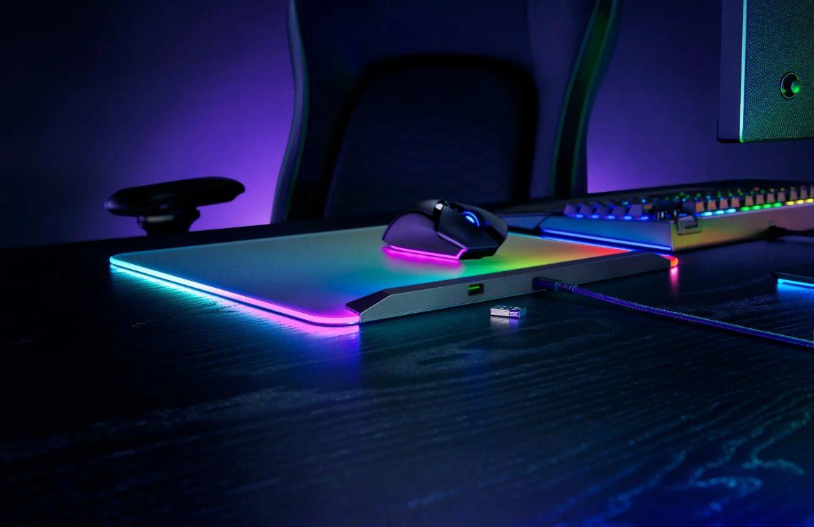

Análisis del Razer Firefly V2: ¿Luz y Precisión para tu Setup?
Cuando se trata de periféricos, a menudo nos centramos en el mouse y el teclado, pero un buen mousepad puede ser la diferencia entre la victoria y la derrota. Hoy analizamos el Razer Firefly V2, una superficie rígida que promete no solo un deslizamiento impecable sino también un espectáculo de luces para tu escritorio.
Iluminación Chroma RGB en todo su esplendor
Lo primero que salta a la vista es su iluminación. Con tecnología Razer Chroma RGB, el Firefly V2 ofrece 16.8 millones de colores y efectos dinámicos que se integran con más de 150 juegos. La iluminación es brillante, uniforme y recorre todo el borde de su delgado perfil, convirtiendo tu setup en una verdadera estación de batalla.
Superficie y Deslizamiento: Velocidad Pura
El Firefly V2 cuenta con una superficie microtexturizada y rígida, optimizada para sensores ópticos. Esto se traduce en un deslizamiento ultra rápido y preciso, ideal para juegos FPS que requieren movimientos veloces y constantes. Si vienes de un mousepad de tela, la sensación es radicalmente diferente, priorizando la velocidad sobre el control de frenado.
Diseño y Detalles Adicionales
Razer ha pensado en los detalles. El mousepad es increíblemente delgado y cuenta con un práctico sujetador de cables en la parte superior para evitar que el cable del mouse se enrede. Su base de goma antideslizante asegura que se mantenga firme en su sitio, incluso en las sesiones de juego más intensas.
Veredicto Final
El Razer Firefly V2 no es para todos. Es un producto premium para gamers que buscan velocidad, precisión y una estética RGB de primer nivel. Si tu estilo de juego se beneficia de movimientos rápidos y quieres que tu escritorio sea el centro de atención, esta es, sin duda, una de las mejores opciones del mercado.
Volver al Blog